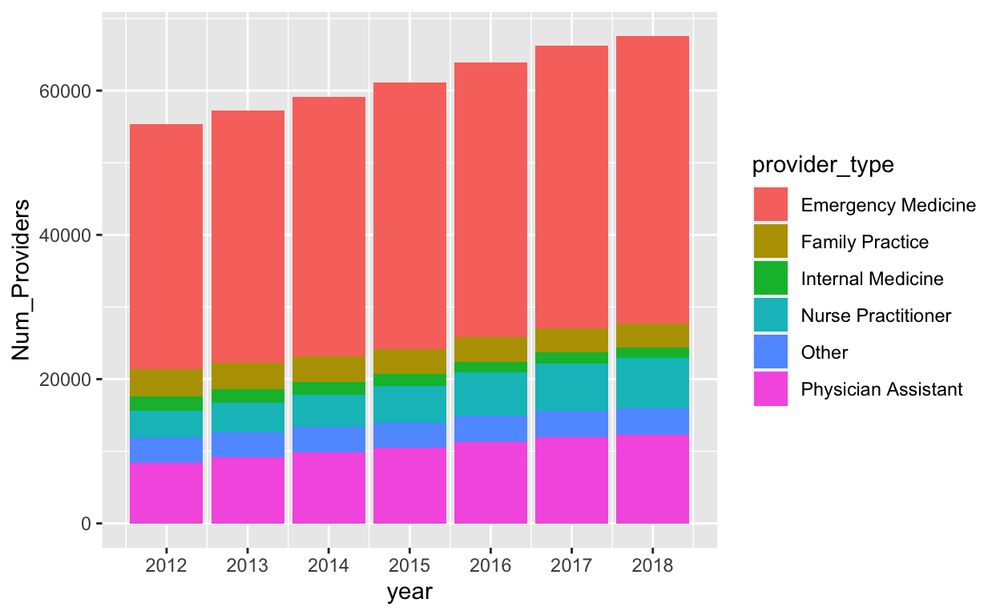
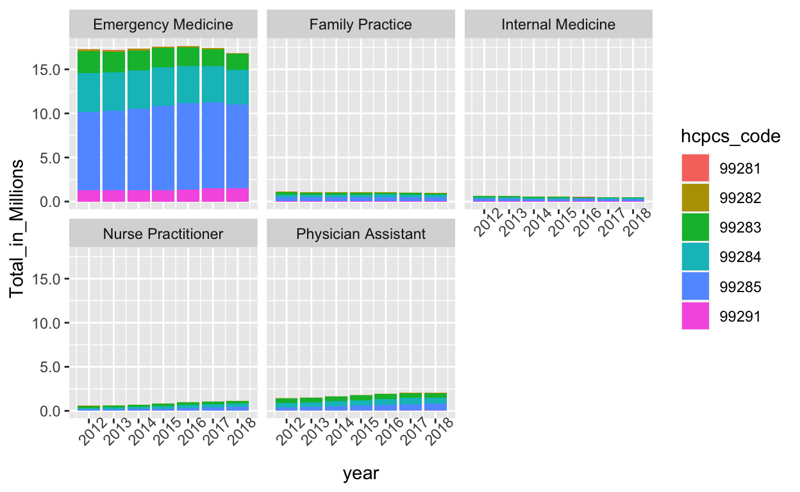
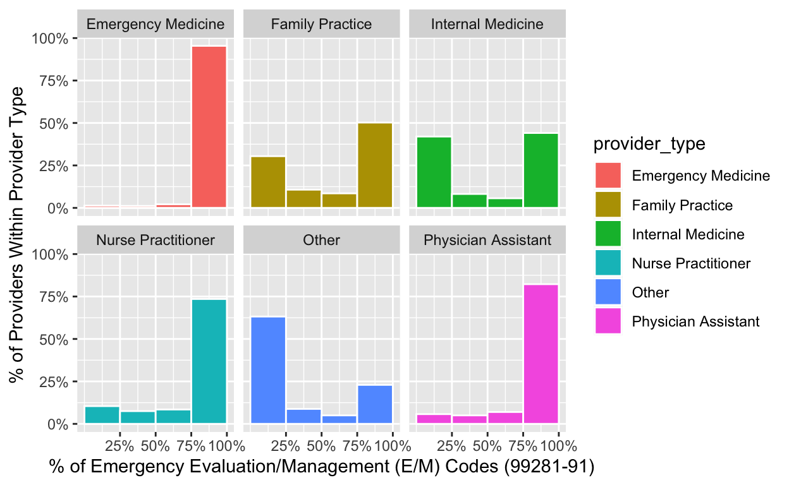
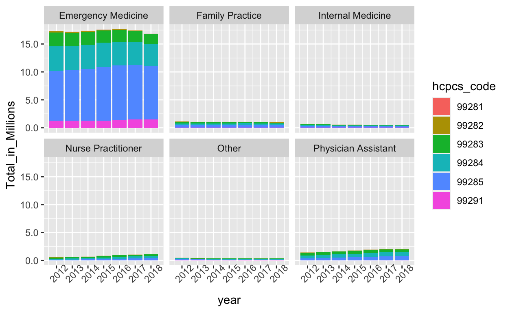

Medicare Provider Utilization and Payment Data (2012-2018)
Each year CMS releases “Medicare Provider Utilization and Payment Data” Public Use Files (PUF),1 including a PUF containing information detailing the services provided by physicians and non-physician practitioners (“Physician and Other Supplier” data).2. These files list the name, NPI number, practice location, and a summary of all HCPCS/CPT codes submitted while caring for patients covered by the traditional Part B Medicare FFS (fee-for-service) program.
CMS provides a 27-page methods document outlining the creation of each year’s public use files.3 A few noteworthy attributes:
“Each year, in the United States, health care insurers process over 5 billion claims for payment. For Medicare and other health insurance programs to ensure that these claims are processed in an orderly and consistent manner, standardized coding systems are essential. The HCPCS Level II Code Set is one of the standard code sets used for this purpose. The HCPCS is divided into two principal subsystems, referred to as level I and level II of the HCPCS. Level I of the HCPCS is comprised of CPT (Current Procedural Terminology), a numeric coding system maintained by the American Medical Association (AMA). The CPT is a uniform coding system consisting of descriptive terms and identifying codes that are used primarily to identify medical services and procedures furnished by physicians and other health care professionals. These health care professionals use the CPT to identify services and procedures for which they bill public or private health insurance programs.”5
At the time of this post, “Physician and Other Supplier Data” was available for calendar years 2012-2018.A “Downloadable Tab Delimited Format” file can be downloaded for each year. Each year’s tab delimited download is a 400-500MB ZIP file that unzips to a ~2GB TXT file.
The following R code can be modified and run to import each year’s worth of data:
# import TXT to R data frame
MedicarePUF <- read.delim("Medicare_Provider_Util_Payment_PUF_CY2012.txt",
header = TRUE, sep = "\t", dec = ".")
# change column names to lower case (earlier years are capitalized)
names(MedicarePUF) <- tolower(names(MedicarePUF))
Given the extremely large size of the dataframe that is imported, we will export data related only to emergency department visits for further analysis. We will save subsets of this data in two ways:
# save ONLY rows containing EM E/M codes (99281-99285)
# find/replace instances of `12` with the year of data you're importing
PartB_12_9928x <- MedicarePUF %>%
filter(hcpcs_code == 99281 |
hcpcs_code == 99282 |
hcpcs_code == 99283 |
hcpcs_code == 99284 |
hcpcs_code == 99285 )
save(PartB_12_9928x, file="PartB_12_9928x.RData")
# save ALL rows for ANY provider who billed AT LEAST ONE EM E/M code
# find/replace instances of `12` with the year of data you're importing
PartB_12_All <- PartB_12_9928x %>% select(npi) %>% unique() %>% left_join(MedicarePUF)
save(PartB_12_All, file="PartB_12_All.RData")
Each year’s worth of data contains ~16-18k rows and 27-29 columns. Running the following code will combine the data for each individiual year into one larger data frame.
Load each year’s RData file:
# load("PartB_12_9928x.RData")
# load("PartB_13_9928x.RData")
# load("PartB_14_9928x.RData")
# load("PartB_15_9928x.RData")
# load("PartB_16_9928x.RData")
# load("PartB_17_9928x.RData")
# load("PartB_18_9928x.RData")
load("PartB_12_All.RData")
load("PartB_13_All.RData")
load("PartB_14_All.RData")
load("PartB_15_All.RData")
load("PartB_16_All.RData")
load("PartB_17_All.RData")
load("PartB_18_All.RData")
Add new column to represent the year in each data frame:
# PartB_12_9928x$year=2012
# PartB_13_9928x$year=2013
# PartB_14_9928x$year=2014
# PartB_15_9928x$year=2015
# PartB_16_9928x$year=2016
# PartB_17_9928x$year=2017
# PartB_18_9928x$year=2018
PartB_12_All$year=2012
PartB_13_All$year=2013
PartB_14_All$year=2014
PartB_15_All$year=2015
PartB_16_All$year=2016
PartB_17_All$year=2017
PartB_18_All$year=2018
Combine, clean-up, and save:
# PartB_12_18_9928x <- bind_rows(PartB_12_9928x, PartB_13_9928x, PartB_14_9928x,
# PartB_15_9928x, PartB_16_9928x, PartB_17_9928x, PartB_18_9928x)
#
# rm(PartB_12_9928x, PartB_13_9928x, PartB_14_9928x,
# PartB_15_9928x, PartB_16_9928x, PartB_17_9928x, PartB_18_9928x)
#
# save(PartB_12_18_9928x,file="PartB_12_18_9928x.RData")
PartB_12_18_All <- bind_rows(PartB_12_All, PartB_13_All, PartB_14_All,
PartB_15_All, PartB_16_All, PartB_17_All, PartB_18_All)
rm(PartB_12_All, PartB_13_All, PartB_14_All,
PartB_15_All, PartB_16_All, PartB_17_All, PartB_18_All)
save(PartB_12_18_All,file="PartB_12_18_All.RData")
names(PartB_12_18_All)
[1] "npi"
[2] "nppes_provider_last_org_name"
[3] "nppes_provider_first_name"
[4] "nppes_provider_mi"
[5] "nppes_credentials"
[6] "nppes_provider_gender"
[7] "nppes_entity_code"
[8] "nppes_provider_street1"
[9] "nppes_provider_street2"
[10] "nppes_provider_city"
[11] "nppes_provider_zip"
[12] "nppes_provider_state"
[13] "nppes_provider_country"
[14] "provider_type"
[15] "medicare_participation_indicator"
[16] "place_of_service"
[17] "hcpcs_code"
[18] "hcpcs_description"
[19] "hcpcs_drug_indicator"
[20] "line_srvc_cnt"
[21] "bene_unique_cnt"
[22] "bene_day_srvc_cnt"
[23] "average_medicare_allowed_amt"
[24] "stdev_medicare_allowed_amt"
[25] "average_submitted_chrg_amt"
[26] "stdev_submitted_chrg_amt"
[27] "average_medicare_payment_amt"
[28] "stdev_medicare_payment_amt"
[29] "year"
[30] "average_medicare_standard_amt" We will keep only a subset of these columns for further analysis.
# PartB <- PartB_12_18_9928x %>%
# select(npi, nppes_provider_gender, nppes_provider_zip, nppes_provider_state,
# provider_type, place_of_service, hcpcs_code, hcpcs_description, line_srvc_cnt, year)
PartB <- PartB_12_18_All %>%
select(npi, nppes_provider_gender, nppes_provider_zip, nppes_provider_state,
provider_type, place_of_service, hcpcs_code, hcpcs_description, line_srvc_cnt, year)
save(PartB, file="PartB.RData")
PartB %>% group_by(year) %>%
summarise(nRows = n(),
nProviders = n_distinct(npi),
nProviderTypes = n_distinct(provider_type),
nUniqueCPTCodes = n_distinct(hcpcs_code),
nServices = sum(line_srvc_cnt)) %>%
knitr::kable(.)
| year | nRows | nProviders | nProviderTypes | nUniqueCPTCodes | nServices |
|---|---|---|---|---|---|
| 2012 | 331510 | 55315 | 61 | 1976 | 40060608 |
| 2013 | 331332 | 57244 | 62 | 1884 | 38682933 |
| 2014 | 335763 | 59126 | 66 | 1843 | 38810638 |
| 2015 | 339572 | 61113 | 66 | 1804 | 39027223 |
| 2016 | 350319 | 63901 | 66 | 1823 | 40234710 |
| 2017 | 356314 | 66198 | 67 | 1828 | 39896674 |
| 2018 | 357031 | 67559 | 63 | 1798 | 39338811 |
#rmarkdown::paged_table(.)
provider_typeWe can see that providers from a wide variety of specialties submitted 99281-99285 E/M codes. This table has been filtered to display only the top 12 provider_types (which had at least 100 providers bill for emergency E/M services in 2018).
PartB %>% select(year,npi,provider_type) %>% unique() %>%
group_by(year,provider_type) %>% summarise(Num_Providers=n()) %>%
spread(year,Num_Providers) %>%
arrange(desc(`2018`)) %>%
head(12) %>%
knitr::kable(.)
| provider_type | 2012 | 2013 | 2014 | 2015 | 2016 | 2017 | 2018 |
|---|---|---|---|---|---|---|---|
| Emergency Medicine | 33977 | 35007 | 35999 | 36964 | 38047 | 39168 | 39904 |
| Physician Assistant | 8400 | 9177 | 9834 | 10461 | 11309 | 11958 | 12273 |
| Nurse Practitioner | 3639 | 4082 | 4529 | 5127 | 5995 | 6637 | 6977 |
| Family Practice | 3766 | 3652 | 3517 | 3466 | 3433 | 3341 | 3287 |
| Internal Medicine | 1945 | 1837 | 1744 | 1610 | 1531 | 1495 | 1420 |
| General Surgery | 601 | 594 | 601 | 632 | 649 | 687 | 701 |
| Psychiatry | 428 | 485 | 504 | 493 | 513 | 461 | 516 |
| Cardiology | 512 | 466 | 450 | 415 | NA | 429 | 396 |
| General Practice | 600 | 521 | 482 | 458 | 434 | 388 | 358 |
| Neurology | 198 | 202 | 227 | 234 | 256 | 283 | 318 |
| Orthopedic Surgery | 308 | 292 | 288 | 290 | 283 | 286 | 257 |
| Critical Care (Intensivists) | 54 | 62 | 72 | 78 | 75 | 70 | 109 |
#rmarkdown::paged_table(.)
Since many providers may have submitted 99281-99285 codes for consults, we will focus on only the top 5 providers types and graph the growth in the number of providers over time.
PartB %>%
#group_by(npi) %>% #filter(sum(hcpcs_9928x,na.rm=T) >= 100) %>% ungroup() %>%
select(year,npi,provider_type) %>%
filter(provider_type=="Emergency Medicine" |
provider_type=="Physician Assistant" |
provider_type=="Nurse Practitioner" |
provider_type=="Family Practice" |
provider_type=="Internal Medicine" ) %>%
unique() %>%
group_by(year,provider_type) %>% summarise(Num_Providers=n()) %>%
ggplot(aes(x=year,y=Num_Providers,fill=provider_type))+
geom_col()+scale_x_continuous(breaks=seq(2012,2018,1))

Showing total codes submitted by all providers regardless of provider type.
PartB %>%
mutate(hcpcs_code = as.numeric(as.character(hcpcs_code))) %>%
filter(hcpcs_code >= 99201 & hcpcs_code <=99499) %>%
# filter(hcpcs_code=="99281" |
# hcpcs_code=="99282" |
# hcpcs_code=="99283" |
# hcpcs_code=="99284" |
# hcpcs_code=="99285" |
# hcpcs_code=="99291" ) %>%
group_by(year, hcpcs_code, hcpcs_description) %>%
summarise(Total_in_Millions = round(sum(line_srvc_cnt)/1000000,digits=3)) %>%
spread(year,Total_in_Millions) %>%
mutate_all(~replace(., is.na(.), 0)) %>%
mutate(Total = round(`2012`+`2013`+`2014`+`2015`+`2016`+`2017`+`2018`,digits=1)) %>%
arrange(desc(Total)) %>%
select(hcpcs_code,hcpcs_description,Total) %>%
ungroup() %>%
mutate(Pareto=round(cumsum(Total)/sum(Total,na.rm=TRUE),digits=3)) %>%
head(10) %>%
#rmarkdown::paged_table(.)
knitr::kable(.)
| hcpcs_code | hcpcs_description | Total | Pareto |
|---|---|---|---|
| 99285 | Emergency department visit, problem with significant threat to life or function | 77.5 | 0.398 |
| 99284 | Emergency department visit, problem of high severity | 40.0 | 0.604 |
| 99283 | Emergency department visit, moderately severe problem | 23.2 | 0.723 |
| 99291 | Critical care delivery critically ill or injured patient, first 30-74 minutes | 10.8 | 0.779 |
| 99213 | Established patient office or other outpatient visit, typically 15 minutes | 8.5 | 0.823 |
| 99214 | Established patient office or other outpatient, visit typically 25 minutes | 8.5 | 0.866 |
| 99232 | Subsequent hospital inpatient care, typically 25 minutes per day | 6.3 | 0.899 |
| 99233 | Subsequent hospital inpatient care, typically 35 minutes per day | 2.6 | 0.912 |
| 99282 | Emergency department visit, low to moderately severe problem | 1.8 | 0.921 |
| 99223 | Initial hospital inpatient care, typically 70 minutes per day | 1.6 | 0.930 |
We can also visualize the total codes submitted by year by provider type.
temp <- PartB %>%
filter(hcpcs_code=="99281" |
hcpcs_code=="99282" |
hcpcs_code=="99283" |
hcpcs_code=="99284" |
hcpcs_code=="99285" |
hcpcs_code=="99291" ) %>%
filter(provider_type=="Emergency Medicine" |
provider_type=="Physician Assistant" |
provider_type=="Nurse Practitioner" |
provider_type=="Family Practice" |
provider_type=="Internal Medicine" ) %>%
group_by(year, hcpcs_code, provider_type) %>%
summarise(Total_in_Millions = sum(line_srvc_cnt))
temp %>%
ggplot(aes(x=year,y=Total_in_Millions,fill=hcpcs_code))+
geom_col()+scale_x_continuous(breaks=seq(2012,2018,1))+
facet_wrap(vars(provider_type))+
theme(axis.text.x = element_text(angle = 45))+
scale_y_continuous(labels = scales::label_number(scale = 1/1000000))

We can replot the graph above scaling the y-axis to percentage of total by running the following R code:
temp %>%
group_by(provider_type,year) %>%
mutate(Pct_Total = Total_in_Millions/sum(Total_in_Millions)) %>%
ggplot(aes(x=year,y=Pct_Total,fill=hcpcs_code))+
geom_col()+scale_x_continuous(breaks=seq(2012,2018,1))+
facet_wrap(vars(provider_type))+
theme(axis.text.x = element_text(angle = 45))+
scale_y_continuous(labels = scales::percent)

As you can see, Emergency Medicine physicians have the fewest non-EM E/M codes, followed closely by PAs and NPs. Of the Family Practice and Internal Medicine physicians who billed at least 10 services for any of the EM E/M codes, a larger proportion billed had a smaller percentage of emergency codes out of their overall E/M services.
# create new column to contain count of 99281-99285 codes
PartB <- PartB %>% mutate(hcpcs_9928x=case_when(
hcpcs_code=="99281" ~ line_srvc_cnt,
hcpcs_code=="99282" ~ line_srvc_cnt,
hcpcs_code=="99283" ~ line_srvc_cnt,
hcpcs_code=="99284" ~ line_srvc_cnt,
hcpcs_code=="99285" ~ line_srvc_cnt,
hcpcs_code=="99291" ~ line_srvc_cnt))
PartB %>%
# keep only Evaluation/Management (E/M codes)
mutate(hcpcs_code = as.numeric(as.character(hcpcs_code))) %>%
filter(hcpcs_code >= 99201 & hcpcs_code <=99499) %>%
# keep only top 5 provider_types
filter(provider_type=="Emergency Medicine" |
provider_type=="Physician Assistant" |
provider_type=="Nurse Practitioner" |
provider_type=="Family Practice" |
provider_type=="Internal Medicine" |
provider_type=="General Surgery" |
provider_type=="Psychiatry" |
provider_type=="Cardiology" |
provider_type=="General Practice") %>%
# summarize % emergency medicine E/M codes by provider
group_by(npi,provider_type) %>%
summarise(Pct_EM_EM = sum(hcpcs_9928x,na.rm=T)/sum(line_srvc_cnt,na.rm=T)) %>%
# create histogram
ggplot(aes(x=Pct_EM_EM, fill=provider_type))+
geom_histogram(col="white", binwidth=0.25, boundary = 0, closed = "left",
aes(y = stat(width*density)))+facet_wrap(vars(provider_type))+
scale_x_continuous(breaks=seq(0.25,1,0.25),labels = scales::percent_format())+
scale_y_continuous(labels = scales::percent_format())+
labs(x="% of Emergency Evaluation/Management (E/M) Codes (99281-91)",
y="% of Providers Within Provider Type")

PartB %>%
# keep only Evaluation/Management (E/M codes)
mutate(hcpcs_code = as.numeric(as.character(hcpcs_code))) %>%
filter(hcpcs_code >= 99201 & hcpcs_code <=99499) %>%
# summarize % emergency medicine E/M codes by provider (99281-99291)
group_by(year,npi,provider_type) %>%
summarise(Pct_EM_EM = sum(hcpcs_9928x,na.rm=T)/sum(line_srvc_cnt,na.rm=T)) %>%
# keep only providers with >50% E/M codes
filter(Pct_EM_EM > 0.5) %>%
select(year,npi,provider_type) %>% unique() %>%
group_by(year,provider_type) %>% summarise(Num_Providers=n()) %>%
spread(year,Num_Providers) %>%
arrange(desc(`2018`)) %>%
#head(12) %>%
#knitr::kable(.)
rmarkdown::paged_table(.)
https://www.cms.gov/Research-Statistics-Data-and-Systems/Statistics-Trends-and-Reports/Medicare-Provider-Charge-Data↩
https://www.cms.gov/Research-Statistics-Data-and-Systems/Statistics-Trends-and-Reports/Medicare-Provider-Charge-Data/Physician-and-Other-Supplier↩
https://www.cms.gov/Research-Statistics-Data-and-Systems/Statistics-Trends-and-Reports/Medicare-Provider-Charge-Data/Downloads/Medicare-Physician-and-Other-Supplier-PUF-Methodology.pdf↩
DMEPOS (Durable Medical Equipment, Prosthetic, Orthotics and Supplies) data can be found here: https://www.cms.gov/Research-Statistics-Data-and-Systems/Statistics-Trends-and-Reports/Medicare-Provider-Charge-Data/DME↩